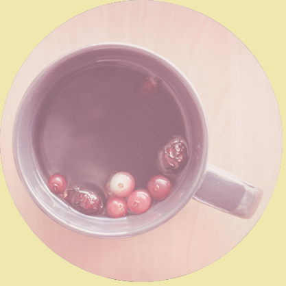
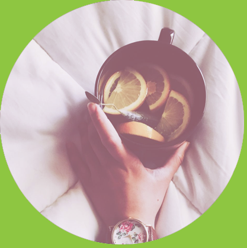

¿Cuánto te debo echar para
una taza?
Lo ideal son 3gr. por taza.Para calcular cuanto son tres gramos nosotros utilizamos y vendemos una cuchara medidora, no obstante, si no tienes basta con utilizar una cuchara de postre. Es importante saber que la cantidad de hebras que echemos solo va a influir en la intensidad del sabor del te y teniendo en cuenta que hay personas que les gusta el te mas intenso que a otrs, se puede modificar la cantidad que se echa sin problemas. Tambien debemos tener en cuenta que el Te Blanco tiene mucho mas volumen que el resto de tes y por tanto, necesitaremos mas cantidad para lograr los 3 gramos recomendados.


¿Debo hervir el agua para hacer té?
Nunca debemos echar agua hirviendo sobre las hebras del té. si tenemos agua hirviendo la podemos utilizar siempre y cuando la hagoams disminuir la temperatura, bien esperando o bien mezclandola con el agua fria. Hay un caso en el que es recomendable hervir el agua y es cuando queremos utilizar agua corriente y esta es dura.En este caso deberemos filtrarla, hervirla y dejarla reposar unos minutos para que los minerales precipiten y su temperatura disminuya.Hay unas reglas basicas de temperatura de agua que debemos cumplir si queremos obtener la mejor version de nuestro te:
Tes verdes 70°C
Tes blancos y negros:80°C
Tes azules(oolongs), Pu erh, rooibos y otras infusiones:95°°C
¿Cuántos té e infusiones son recomendables al día?
Cada persona tiene una tolerancia a la teina distinta de modo que tendra que ver cuantas tazas de te puede tomar al dia.no obstante podemos compaginar tomar te con tomar otras infusiones sin teina como el rooibos, las infusiones frutales, las especiadas, etc. Y de esta forma no nos tendremos que preocupar por si nos estimula demasiado.